MENGONGCHANG · 家族财富百年传承
以确定性狠值
成就家族财富百年传承
家族传承系统解决方案
梦工场 · 富豪家族狠值传承系统
一份面向超高净值企业家的家族财富百年传承沟通框架
五层价值人生 · 一页看懂前世今生
从价值创造，到价值传承
这座金字塔不是装饰，而是整段人生路径的导航。悬浮任一层先查看阶段简介，点击即可进入对应经历、案例、数据与成果。
传承模式·传承价值
为高净值家族，基于继往开来的家族传承终极价值，开创具备系统解决方案的独特传承模式。结合身家诊断、家族信托、传承学院、公益慈善，致力于成就家族财富百年传承。
悬浮查看阶段简介 · 点击进入对应里程碑
价值的起点
企业家土壤
价值的起点
从此开启了我一切都围绕价值的人生
我是八七届华中科技大学毕业生，和黄主席一样，都是理工出身、实业底色、长期主义的创业者。
早期做实业、做贸易、做新材料。
战略定位 · 增进价值
商业模式
第一模块
战略定位 · 增进价值
1998年开始，为企业家基于产品与服务价值，以战略定位打造独特的商业模式。
1998年创立作为中国定位界黄埔军校的成美。通过与全球战略定位之父特劳特先生合作，打造了王老吉等强势品牌并实现百倍业绩增长，也成为红杉资本的战略顾问。
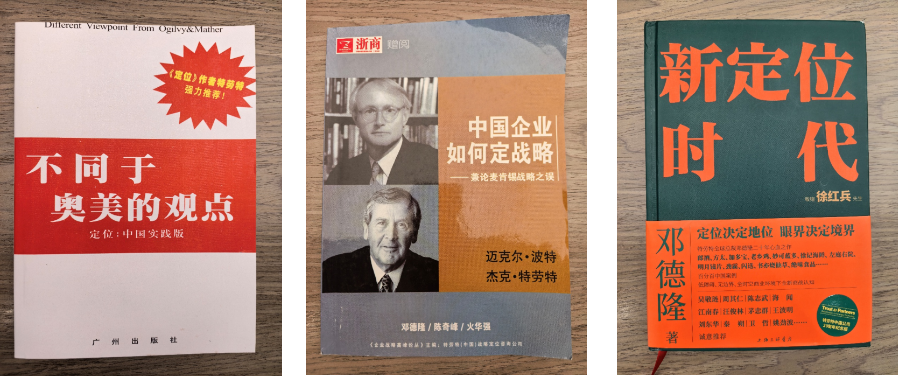
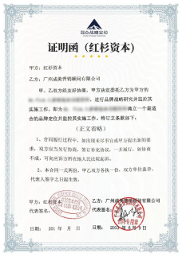
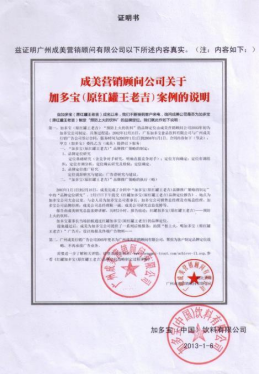
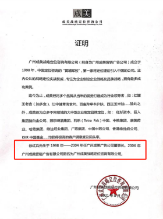
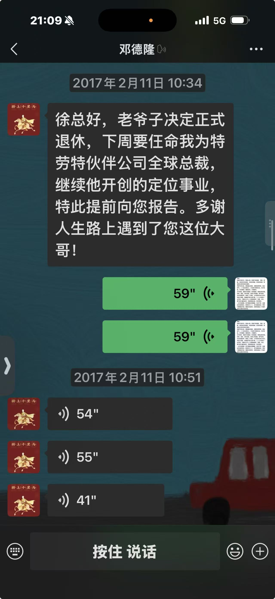
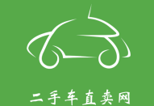
企业家思维 · 发现价值
投资模式
第二模块
股权投资 · 发现价值
2005年开始，以企业家思维为投资者投资优质上市企业股权，开创独特的投资模式。
在证券市场以“不买会涨、只买狠值”的企业家思维，成就了有审计的17年近40倍回报。如果统计20年完整周期、多方可验证的真实收益，我们综合回报超过120倍。
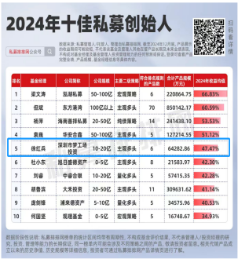
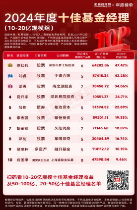
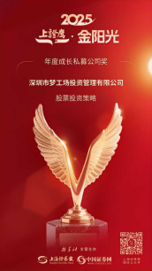
公益实践 · 贡献价值
公益模式
第三模块
公益实践 · 贡献价值
2011年开始，为慈善家与捐赠者基于社会公益价值，打造独特的公益模式。
以助善的独特定位区隔于公益界的助困，开创了“扶贫济困找其他，好人困难找建辉”的公益新品类。
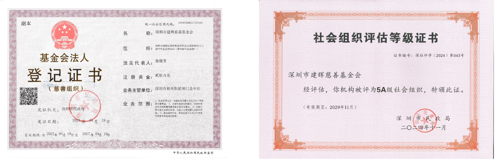
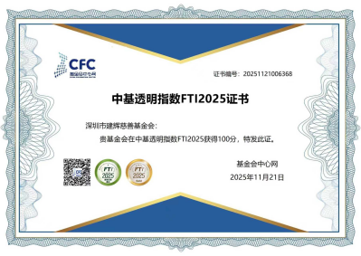
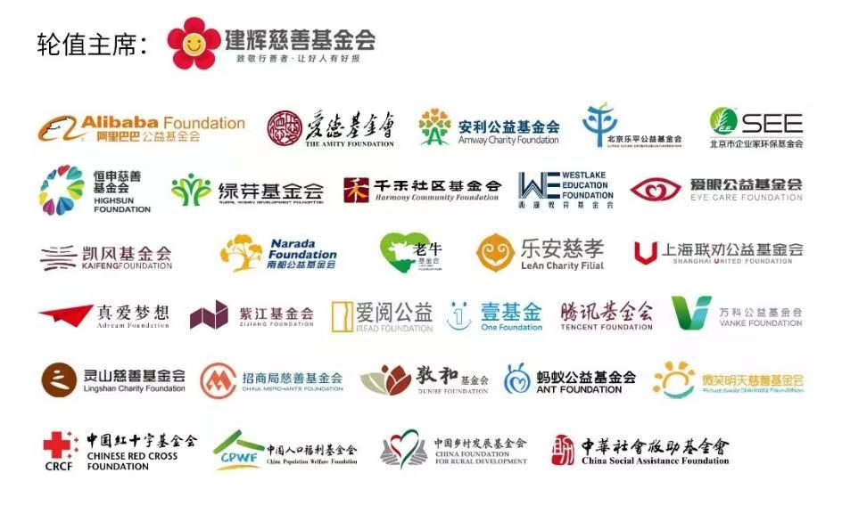
家族传承 · 终极价值
传承模式
第四模块
家族传承 · 终极价值
2020年开始，为高净值家族，基于家族传承的终极价值，开创具备系统解决方案的独特传承模式。
“梦工场生态”，不只是过往“确定性狠值”的梦工场私募投资，而是结合身家诊断、家族信托、传承学院、公益慈善，致力于成就家族财富百年传承。
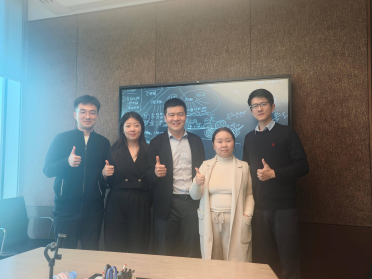
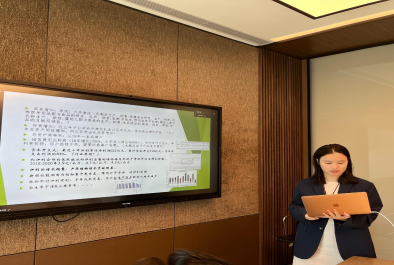
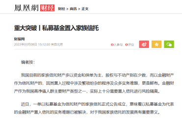
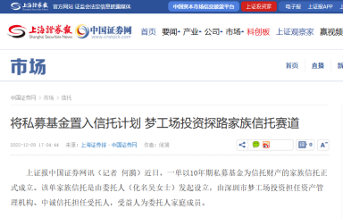
PAGES 08—11 · 富过三代
从财富传承的规律，走向一套可执行的系统
创业难、守业难、躺平也难。真正要解决的不是某一项资产涨跌，而是整个家族在足够长时间里的价值创造、财富管理、风险隔离与人的成长。
“我，曾经也富过！”
创业难
企业寿命往往远短于传承周期。一代打下的江山，无法只靠企业自身自然延续到下一代。
企业寿命短于家族传承周期创业靠赔率，守业靠胜率
守业难
创业依靠聚焦与冒险博取高回报；守业依靠分散、开放与风险管理。用同一套方法连续跨代创业，成功概率会快速衰减。
8% × 8% × 8% = 0.0512% · 材料假设不进则退
躺平也难
长期货币扩张与购买力损耗会持续侵蚀财富。把“不动”当作安全，几十年后可能恰恰成为最大的风险。
财富如逆水行舟忽略整体身家
把绝大多数精力放在企业增量，却很少从家族全部资产、负债、现金流与风险敞口审视存量财富。
不谋全局者，不足谋一域。
忽略长期
只看眼前收益，忽略货币超发与跨代周期。今天看似稳妥的配置，放到几十年的时间尺度里可能持续缩水。
财富传承，是一场跨代的长期工程。
整体财富长期回报率>传承要求回报率
只要整体身家的长期复合回报跑赢“富过三代”所要求的回报率，财富就能从“一代拥有”变成“世代相传”。梦工场不是一家普通的私募基金，而是以“确定性狠值”投资为引擎，帮助中国企业家家族实现财富百年传承的系统解决方案提供商。
不是卖产品，是让五个模块相互咬合，成就客户的百年传承。
THE CLIENT'S JOURNEY · 人生历程
从价值创造到价值传承：一代企业家的闯关之路
基于上千位高净值客户的交流，梦工场把“富过三代”拆成必须依次面对的六道关。悬停可查看这一关的价值，点击即可进入对应页面。
从一代拥有，到世代相传
每一关都是分水岭：企业、财富、资产、制度、后代与社会价值共同构成完整传承。